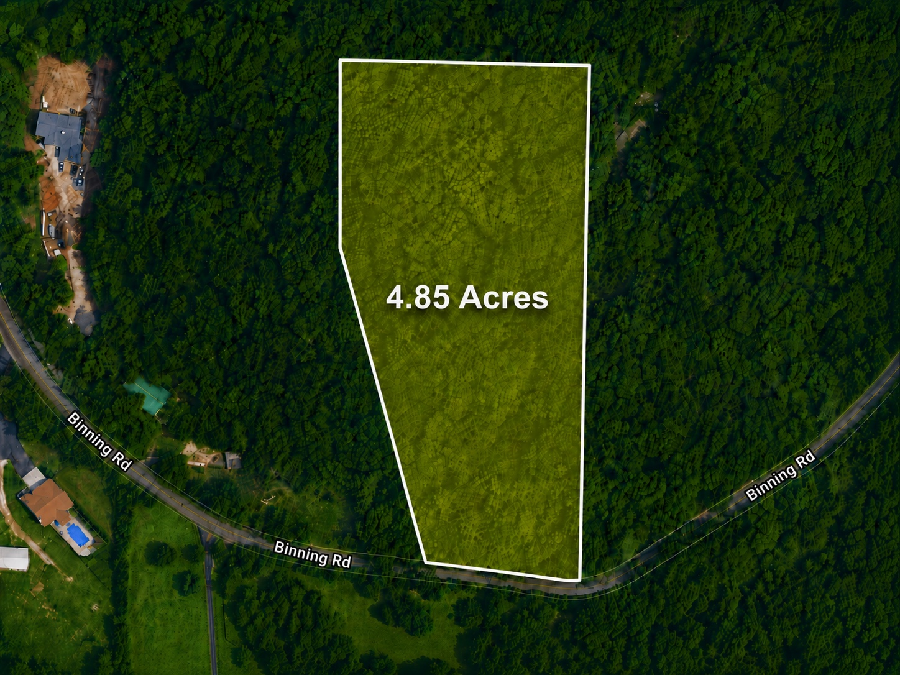
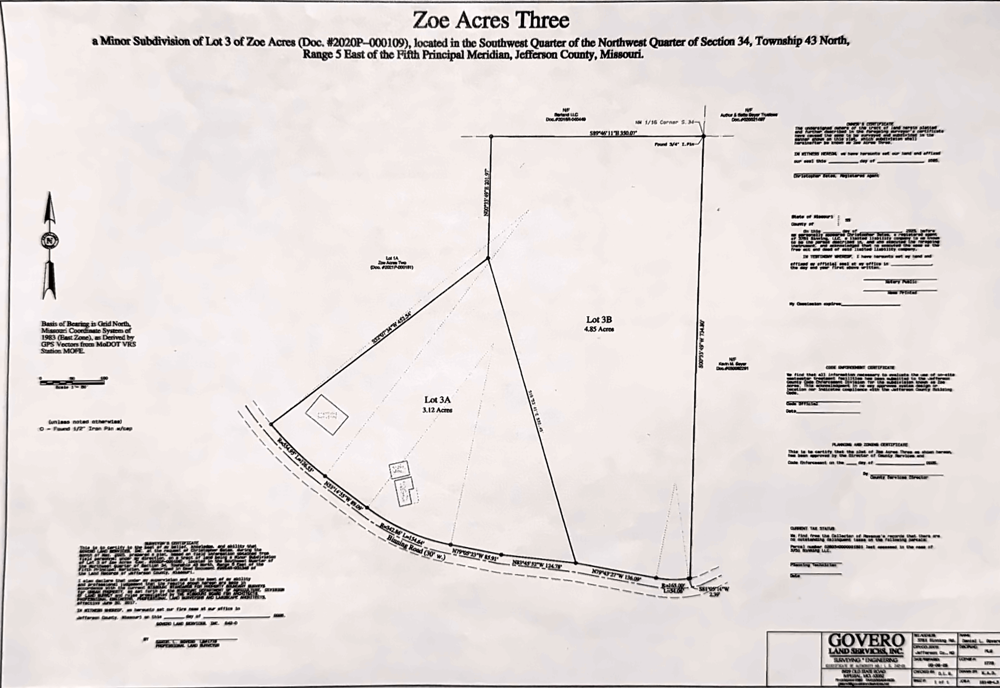

Grades K-5
Seckman Elementary
2824 Seckman Road636-296-2030 Approx. 2.1 miles
Lot 3B · Imperial, Missouri
Room to build. Freedom to imagine.
Nearly 5 acres of opportunity in Imperial! Lot 3B at 3751 Binning Road offers endless possibilities. Build the large custom home you have always imagined, create a private family compound, establish your own recreational getaway, or enjoy it as a small hunting property close to home.
Whether you are dreaming of a peaceful homesite with room to spread out, space for additional family residences, or simply a private piece of land to call your own, this property delivers the freedom and flexibility that are becoming increasingly difficult to find.
Bring your builder, your plans, and your vision. Opportunities like this do not come along often—especially at such a great price. Schedule a time to walk the property and see everything Lot 3B has to offer!

3751 Binning Road · Lot 3B
Wooded acreage, road frontage and room to create something distinctly your own—within easy reach of Imperial, Arnold and Interstate 55.
Country-style privacy. Everyday convenience.
Area information & lifestyle guide
This scenic Imperial location gives buyers space for a custom home, family compound, recreation or a private retreat—while keeping Seckman schools, Imperial Main Street, groceries, dining and major roads within easy reach.
The property sits near the Seckman Road corridor with convenient access to Imperial, Arnold and Interstate 55. Buyers can enjoy a private acreage setting while remaining close to schools and daily essentials.
Fox C-6 School District
Grades K-5
Grades 6-8
Grades 9-12
Imperial favorites
Daily essentials
Time outside
Care nearby
Know the ground
The supplied boundary survey identifies Lot 3B as 4.85 acres within Zoe Acres Three and shows its shape, boundary lines and relationship to Binning Road and neighboring Lot 3A.


See it for yourself